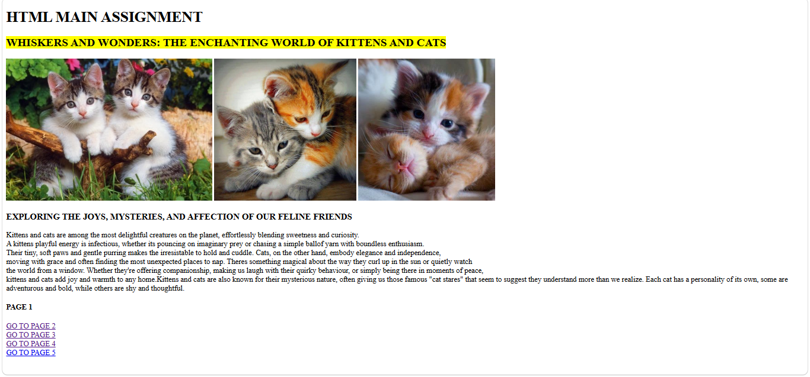
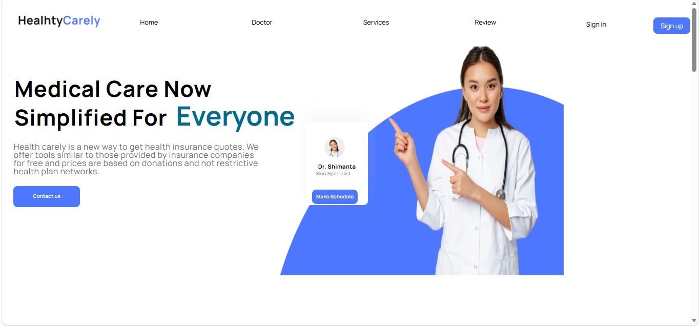
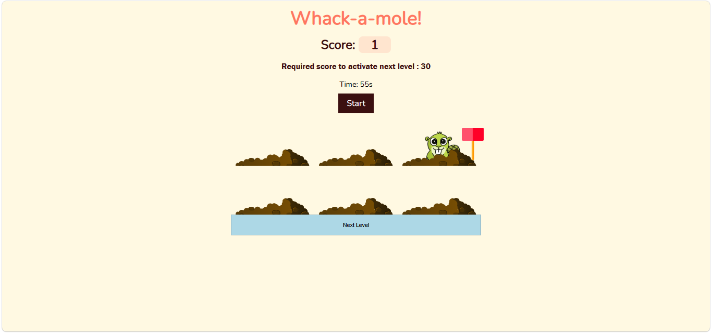
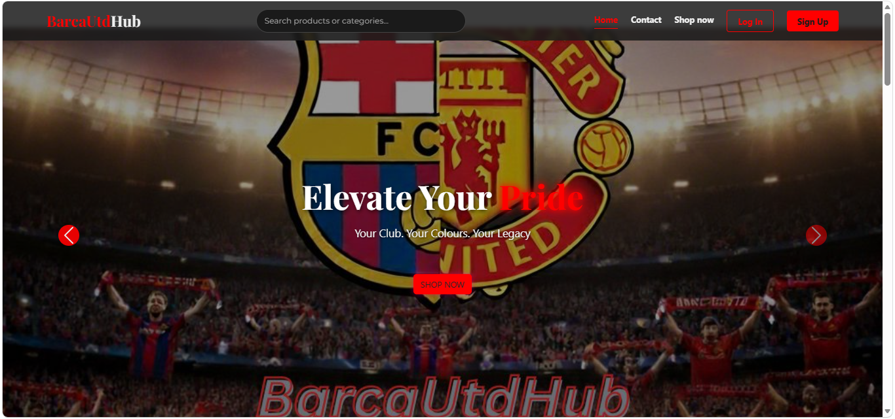

This project is a Website with a collection of topics that reflect some of my interests, while also allowing me to demonstrate my HTML and web-design skills. Each page has its own theme, information, images, and style, creating a website that is both informative and personal. The topics range from animals and sport to science and travel, giving the website a variety of content and showing how different ideas can be presented across multiple website.
View Project
This project is a recreated healthcare website designed to demonstrate the CSS and HTML skills I developed while learning web design. The website was created as a practice project after completing the fundamentals of CSS, allowing me to apply different styling techniques, layouts, colours, fonts, and visual elements. The goal was to closely mimic an existing website while showcasing my understanding of CSS and how it can be used to create a clean, organised, and visually appealing design.
View Project
This project is a Whack-a-Mole game that I developed as part of a group project after learning HTML, CSS, and Javascript. It was my first game project and gave me the opportunity to apply the web development skills I had learned in a more interactive and creative way. To make the game unique, we designed each level with its own theme and challenges, while gradually increasing the difficulty as the player progresses. The project allowed us to explore game logic, user interaction, styling, animations, and Javascript functionality while working together to create an engaging and enjoyable experience.
View Project
This project is a BarcaUTD Hub e-commerce website created with a partner as part of our course assignment. The website brings FC Barcelona and Manchester United together in one online store, allowing users to browse and purchase merchandise from both teams. We applied the skills learned throughout the course, including HTML, CSS, Javascript, responsive design, navigation, forms, images, product layouts, user interaction, and website structure. The project allowed us to combine these skills to create a functional, organised, and user-friendly e-commerce website.
View Project